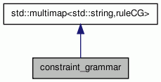

constraint_grammar Class Reference
Class constraint_grammar implements a pseudo CG, ready to be used from a relax PoS tagger. More...
#include <constraint_grammar.h>
Inheritance diagram for constraint_grammar:

Collaboration diagram for constraint_grammar:

Public Member Functions | |
| constraint_grammar (const std::string &) | |
| Create a grammar loading it from a file. | |
| void | get_rules_head (const std::string &, std::list< ruleCG > &) const |
| add to the given list all rules with a head starting with the given string | |
Public Attributes | |
| bool | senses_used |
| flag to remember if rules affecting senses where used | |
| std::map< std::string, setCG > | sets |
| map to store -by name- all sets defined in the CG | |
Detailed Description
Class constraint_grammar implements a pseudo CG, ready to be used from a relax PoS tagger.
Constructor & Destructor Documentation
| constraint_grammar::constraint_grammar | ( | const std::string & | ) |
Create a grammar loading it from a file.
Member Function Documentation
| void constraint_grammar::get_rules_head | ( | const std::string & | , | |
| std::list< ruleCG > & | ||||
| ) | const |
add to the given list all rules with a head starting with the given string
Member Data Documentation
flag to remember if rules affecting senses where used
| std::map<std::string,setCG> constraint_grammar::sets |
map to store -by name- all sets defined in the CG
The documentation for this class was generated from the following file: